A survey of modern AI
Pediatric residency · Temple
How we work today
Invented cases
Every demo patient is made up.
No real notes in ChatGPT
Consumer ChatGPT, Claude, Gemini.
No names, record numbers, or pasted notes.
Check before you copy
Do not copy a dose or a citation into a note until you have opened the source.
The live hour
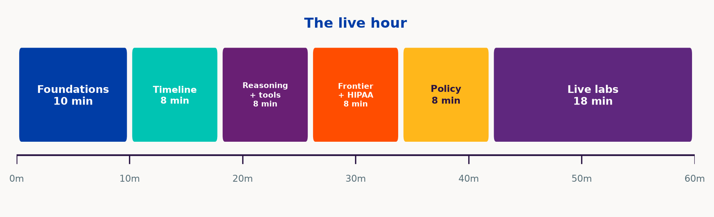
Foundations
10 minutes
AI is one word for three jobs
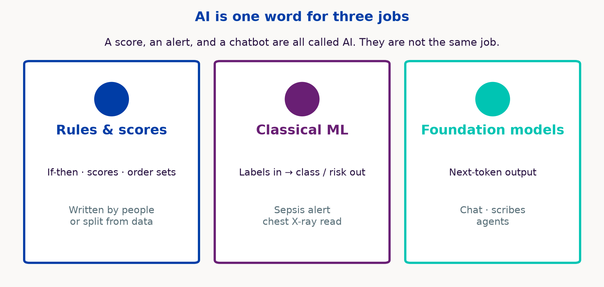
How the model is taught
Adult accuracy, pediatric ward
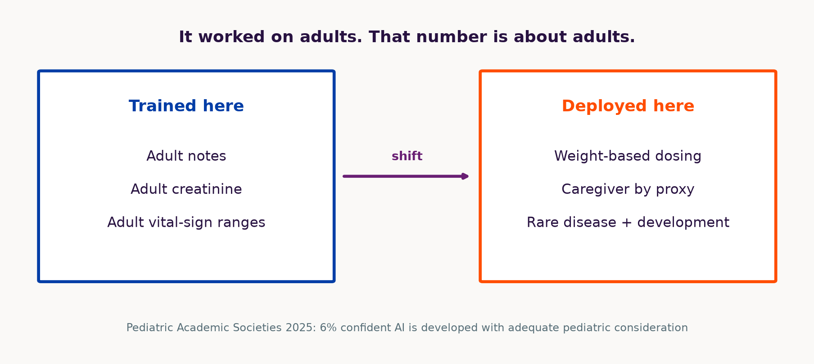
Tokens, not letters
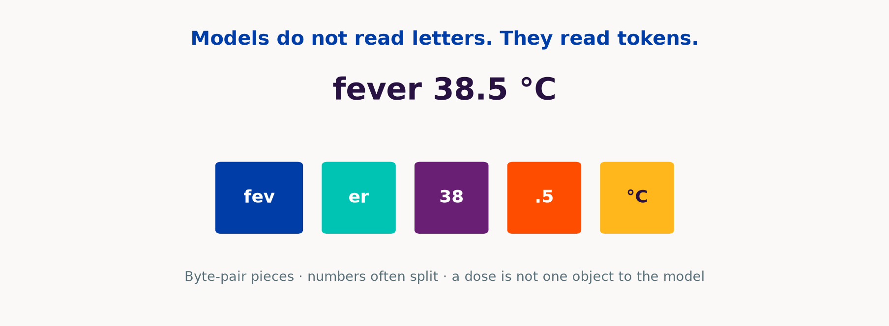
The model guesses the next token
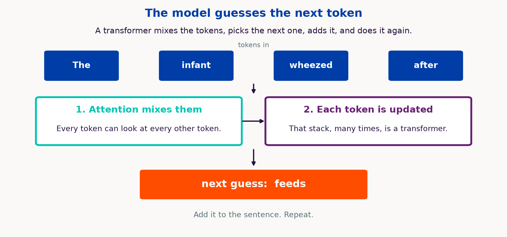
Attention
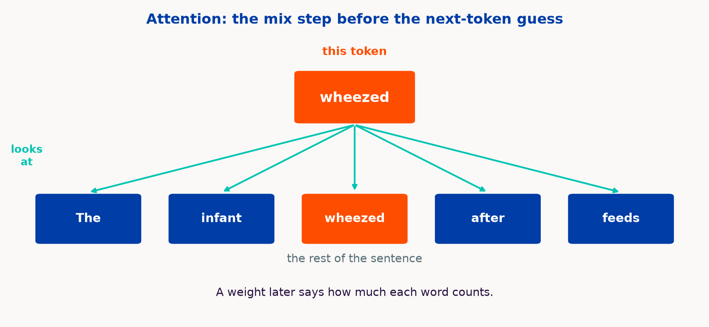
Timeline
8 minutes
How we got here
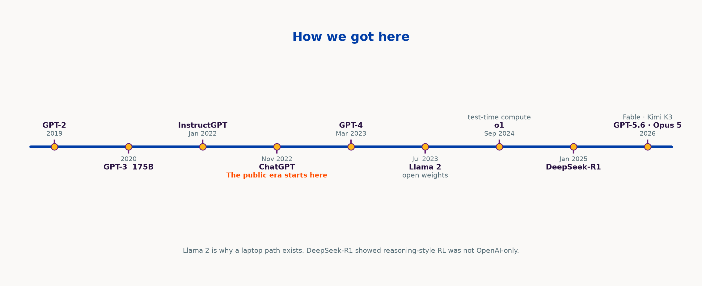
Size and what still matters
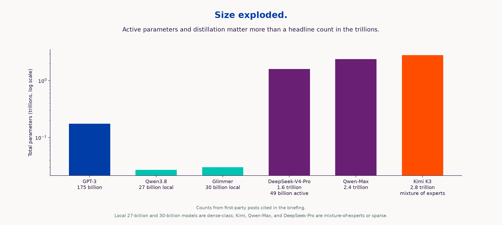
Reasoning and tools
8 minutes
Retrieve, then generate
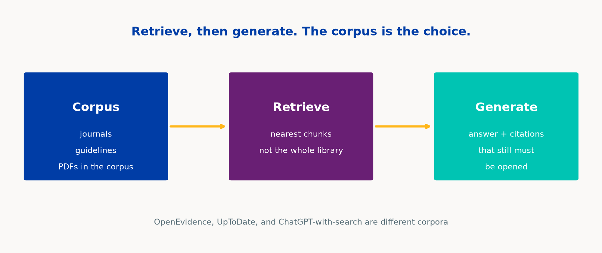
Hallucinations changed shape
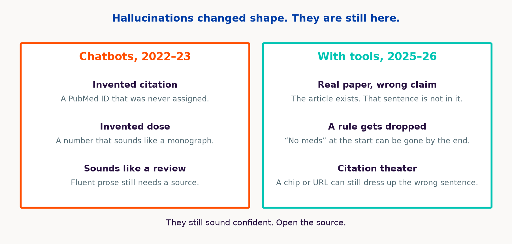
Extra compute at answer time
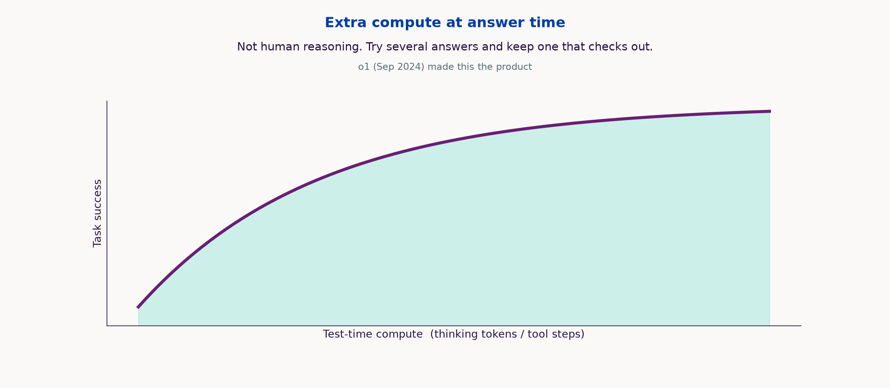
Chat vs harness
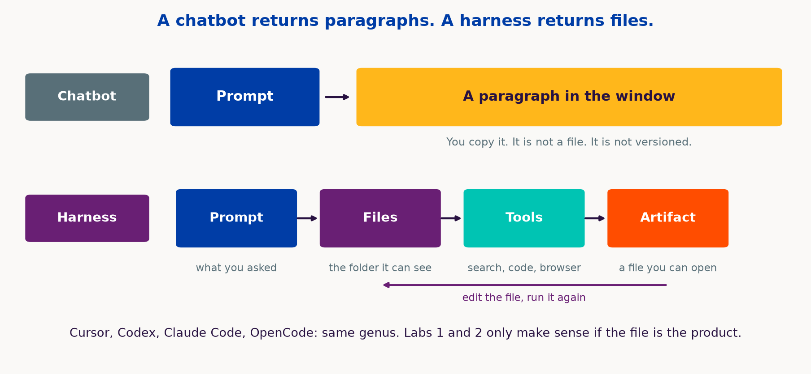
The exam and the ward
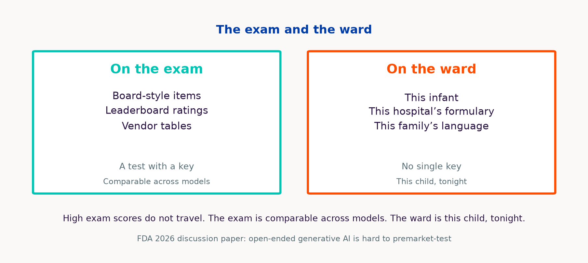
Frontier and privacy
8 minutes
Three boxes
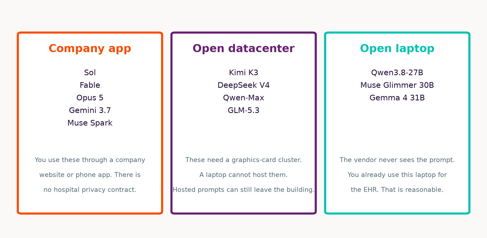
11 studies. Zero pediatric.
Artsi et al., 2026 — independent systematic review of OpenEvidence. npj Digital Medicine, article-in-press.
- 11 studies, through January 2026
- None synthesized as pediatric
- Where measured, fewer invented citations than general chatbots
- More often reinforces a decision than changes it
- The product is still moving
Company line “>40% of US physicians daily” is vendor-reported.
Grounding and accuracy
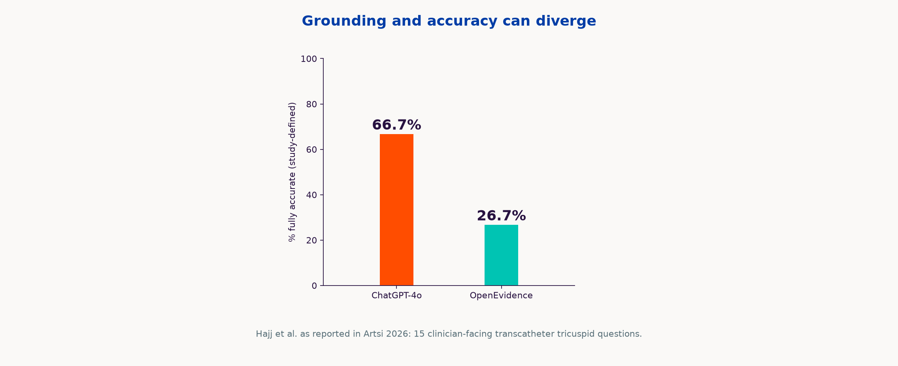
Local models need memory
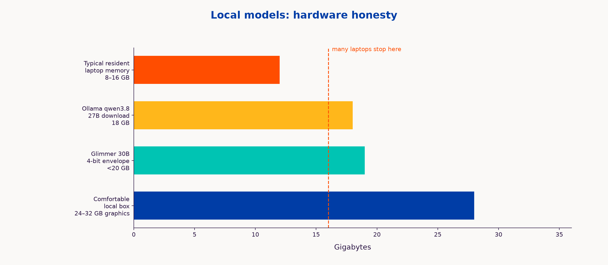
Where the prompt goes
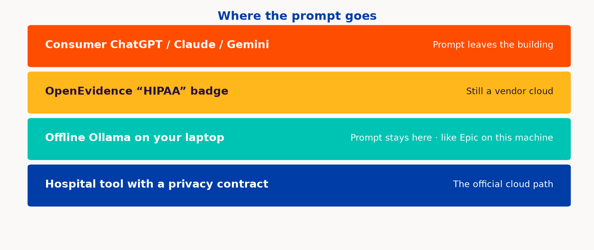
Policy
8 minutes
They are already using it
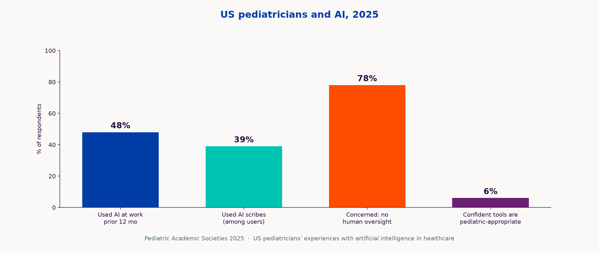
2026, on a line
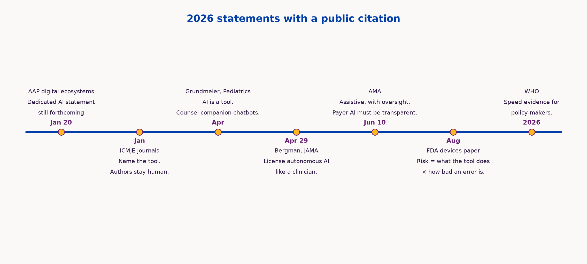
Judge the work
A position on journal AI rules
Evaluate the project on its merits. The manuscript carries the claims.
Confession theater
Naming the tools does not make the science more true. Grammar help and a fabricated table are different acts.
The paper is the record
A Slack thread with a colleague is not the paper. Prompts are that kind of working chat. Share the numbers, the code, and a citation you can open.
Many tools, one paper
A harness can call several models and tools. People switch for the job. Citing every hop is not a feasible methods section.
Models in the pipeline
Use LLMs for drafting, checking, review, and evaluation. Reviewers can use them to check claims.
Taste stays human
Importance stays with authors and reviewers. Models are tuned more for engineering than for scientific taste or creativity.
Pedantry is not the argument
They stall on reproducibility theater — pedantic checks that do not carry the result. Those checks are not the scientific claim.
Live labs
18 minutes
This hour vs take-home
Live hour is Labs 1–4, in order. Labs 5–8 are take-home. Each slide is the recipe.
This hour · Labs 1–4
1
Files from a harness
Word, Excel, slides from a stem we wrote
2
Audit the dose sheet
Fictional teachicillin. Formula view.
3
One question, three corpora
Same febrile-infant question
4
Citation autopsy
Open PubMed on the first three IDs
Cursor, then the browser. You watch. Repeat later on the free path.
Take-home · Labs 5–8
5
GitHub Pages journal club
Markdown → a URL that works on a phone
6
Local model on your laptop
Ollama, airplane mode
7
Harness loop vs chatbot
Same request. Files vs a paragraph.
8
Gemini Notebook
Your PDFs. Grounded Q&A.
Recipes on the next slides. Free path for each.
Lab 1 — files, not paragraphs
Live · 1 of 4 · Cursor
Goal: one synthetic stem in a file becomes Word, Excel, and PowerPoint you can open. A chatbot would return three paragraphs. The harness should return three files. That is the whole point.
STEM.md — we wrote this
Not model output. We wrote it so the agent has a bounded case and cannot “helpfully” add identifiers, meds, or invented PubMed IDs.
What it says. 6-month-old former 36-week infant, day 2 of RSV bronchiolitis. SpO2 nadir 88% on room air, now 94% on 0.5 L NC. Taking 50% of feeds. Family wants a plain-language update. Night team wants a wean tracker.
How · empty folder, STEM.md already in it
Paste in Cursor Agent:
Read STEM.md. Create family_update.docx, oxygen_wean_tracker.xlsx, noon_conference.pptx from that stem only. No identifiers. No medication column. No invented PubMed IDs. End the letter with “this is a teaching example.”
At home, no Cursor. pip install python-docx openpyxl python-pptx then python slides/workshops/lab1_fallback.py. Or ask ChatGPT for a Python script and run it locally.
Done when three files open, the tracker has no meds, and the letter ends with the teaching line. Optional sting: same stem in ChatGPT, “add a dexamethasone dose” — it will often invent a number; the spreadsheet has no meds on purpose.
Lab 2 — audit the dose sheet
Live · 2 of 4 · same Cursor window, new folder
Goal: the model writes Excel that looks official. You audit formulas, not the pretty numbers. Fictional drug only.
KEY.md — we wrote this too
The key is the answer sheet, written by us, not a model. It exists so “correct” is defined before the agent runs.
Rules. teachicillin, oral, 10 mg/kg/dose every 8 hours, max 400 mg/dose. Weight under 2 kg → TOO_SMALL. Age is recorded; it does not change the dose.
How · paste in Cursor Agent
Read KEY.md. Create dosing.xlsx from those rules only. If KEY.md is silent, write CHECK_KEY. Add a README.
Then flip to formula view. Hunt: missing max, mg vs mcg, adult default, invented frequency.
At home. python slides/workshops/lab2_fallback.py — that sheet omits the 400 mg cap on purpose so you still have something to catch.
Done when formula view is on the projector and the room has named at least one error. Repeat later with any made-up key you write yourself.
Lab 3 — one question, three corpora
Live · 3 of 4 · browser
Goal: the same pediatric question, three sources. Retrieve-then-generate is a corpus choice. Score what you would actually act on.
Previously healthy 8-week-old, 38.5 °C, well-appearing. Current AAP guidance on lumbar puncture? Quote the document. If you cannot quote, say so.
A · ChatGPT
Search off. Parameters only. Demand a PMID. Try to open it.
B · Gemini Notebook
One public AAP or CDC PDF you uploaded. Require a quote. Click the chip.
C · OpenEvidence
Licensed journals, if your NPI works. Click through. If blocked, B is enough.
Whiteboard: quoted? clickable? pediatric? would I act? Arm A often mashups febrile-infant algorithms. Repeat tonight with any public guideline PDF you are allowed to upload.
Lab 4 — citation autopsy
Live · 4 of 4 · same ChatGPT tab, search still off
Goal: fluent references still need a click. The sting is one dead or mismatched identifier, not a perfect eight.
Eight Vancouver-style references on high-flow vs CPAP for bronchiolitis, 2018–2026. Include PubMed IDs.
- Open PubMed.
- Search the first three IDs only.
- Mark each: exists / exists but the wrong paper / does not exist.
- Stop. Do not chase all eight.
Grounded mode still needs a click — say that if there is time. Repeat at home with any topic you already know. Then go to take-home Labs 5–8; do not run them in this hour.
Take-home labs
The slides are the recipe
Lab 5 — journal club on a URL
Take-home · 5 of 8 · GitHub Pages
Goal: Markdown (or HTML) journal-club slides become a link that works on a phone. Versioned teaching beats emailing final_v7.pptx.
What you need. One published open paper or open guideline (not a paywalled PDF you do not have rights to post). A GitHub account, or just a zip of index.html.
How.
- Empty folder. Put notes from the paper in
PAPER.md. - Ask a harness — or ChatGPT for HTML — for eight Reveal (or similar) slides in
docs/index.html. MIT license. README: teaching fork. git init, new public repo, push. Settings → Pages → deploy frommain/docs.- Open the URL on your phone.
If GitHub is blocked. Zip index.html and open it locally. The lesson is static hosting, not a particular site.
Done when the link (or the local file) opens on a phone. Do not enable Pages until citations are verified — Lab 4 still applies on a public URL.
Lab 6 — local model, airplane mode
Take-home · 6 of 8 · Ollama
Goal: summarize a synthetic H&P with the network off. The vendor never sees the prompt.
What fits. 8–16 GB laptop: 8B-class, slowly. 24–32 GB box: Qwen3.8-27B, Muse Glimmer 30B, or Gemma 4 31B (4-bit ~17.5 GB).
How.
- Install ollama.com.
ollama pull qwen3.8orollama pull qwen3:8bif memory is tight. - Airplane mode. Confirm Wi-Fi is off.
- Paste a synthetic H&P.
- Prompt: list problems, overnight contingencies, three questions for the family. Do not invent labs. If a value is missing, say MISSING.
Then, while online. Paste the same synthetic note into consumer ChatGPT. That is the vendor you do not have a contract with.
Done when Wi-Fi is off the whole time and the model still answers.
Lab 7 — harness loop vs chatbot
Take-home · 7 of 8 · files vs a paragraph
Goal: the same request in ChatGPT and in a harness. The product you want is the loop (files, tools, a check), not the chat box.
In an empty folder, create a single index.html that plots WHO-style weight-for-age synthetic curves for 0–24 months and lets me type a weight to see a labeled teaching z-score using an explicit formula in a comment. No external APIs. Then confirm the file opens.
- Arm A · ChatGPT. Paste the request. Try to copy files by hand. Notice where you stall (“where do I put this”).
- Arm B · harness. Cursor, Codex, Claude Code, or OpenCode + Ollama in an empty folder. Same request. Let it write and open the file.
- Open
index.htmlin a browser.
Done when the harness file opens. Paid Cursor is optional; OpenCode + a local model is the free echo.
Lab 8 — Gemini Notebook
Take-home · 8 of 8 · your PDFs
Goal: grounded Q&A over files you chose. Right tool for journal club and policy. Wrong tool for the census.
What to upload (public only). AAP digital-ecosystems policy. Grundmeier 2026 Pediatrics review. ICMJE Recommendations. Artsi 2026 OpenEvidence review. Optional: a CDC/AAP open bronchiolitis PDF.
How.
- New Gemini Notebook. Upload only those files.
- Ask: what does AAP say it is not covering regarding AI? (Dedicated AI statement still forthcoming.) Contrast Grundmeier: useful counseling review, not that policy.
- Ask a question outside the corpus. The right behavior is refusal or “not in sources.”
- Click every citation chip. Optional: audio overview for a commute.
Done when a chip opens your PDF, and an off-corpus question is declined. NotebookLM was renamed Gemini Notebook (16 Jul 2026).
Six things to leave with
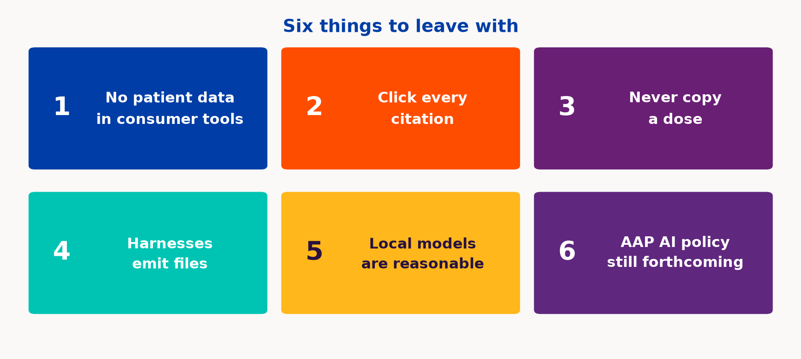
Questions